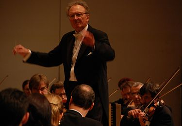

List of music genres: Academic music
There are only four musical styles: folk music, sacred music, academic music and popular music. Each genre has a number of genres of music and each genre has many subgenres.
Music is an integral part of most people's lives. Musical works are listened to in all corners of our planet, even in the most distant ones. Despite the immense popularity and importance of this art movement, many people do not think about what styles and genres of music exist. This article discusses the TOP-10 musical directions, which have not lost their popularity to this day.
Due to the variety of different genres, many of you are wondering: What styles of music are there? We have tried to answer your question and organize the main styles of music in a separate list, which, in the opinion experts will always be popular despite many years.
Academic music
Academic music (serious music, secular professional) - music that is in relation to the continuity, first of all, to the formed in Europe in the XVII-XIX centuries. musical genres and forms (opera, symphony, sonata, etc.), melodic and harmonic principles and instrumental composition. In certain specific cases, the conflict of academic composers of the 20th century, especially those belonging to the avant-garde movements (for example, John Cage or Karlheinz Stockhausen), with the musical tradition of the past can be very sharp, but this is precisely the conflict (extremely tense dialogue), while other types of modern music - from pop music to jazz - from classical European music tradition almost do not interact. However, certain experiments on crossing academic music with various other traditions were undertaken throughout the 20th century: from a hybrid of classical and jazz created by George Gershwin to recordings accompanied by a symphony orchestra (symphonic jazz), the use of a symphony orchestra in rock music (symphonic rock, symphonic metal, symphonic black metal, etc.) or with other borrowed among the "academics" elements of performance practiced by many rock bands. In a broader sense of the word, academic music can be considered the one that is written, performed and studied among musicians with an academic musical education that developed in the 20th century from classical musical traditions, but significantly deviated from them towards rational principles of organizing musical material.